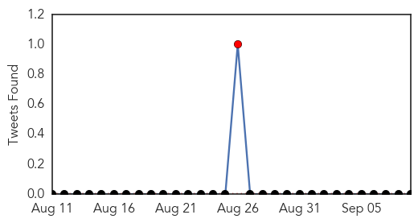

Mumps
30-Day Web Trend
0 alerts, 0 warnings

30-Day Twitter Trend
1 alerts, 0 warnings

Article Locations

Article Confidences

Top Articles:
-
No articles found for Sep 09, 2015
Top Tweets:
-
No tweets found for Sep 09, 2015
West Nile Virus
30-Day Web Trend
1 alerts, 0 warnings

30-Day Twitter Trend
0 alerts, 0 warnings

Article Locations
Article Confidences

Top Articles:
Top Tweets:
- 0.640
- Flavivirus news: West Nile Virus Rising in California, CDC Reports - Medscape: West Nile Virus ... http://t.co/EFdpCNhRiV pathogenposse